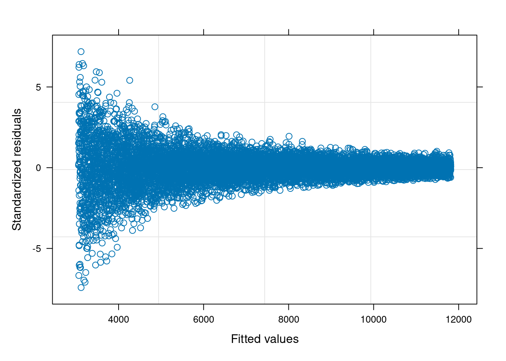

Rows: 9959 Columns: 2
── Column specification ────────────────────────────────────────────────────────
Delimiter: ","
dbl (2): Ingreso, Gasto_Educacion
ℹ Use `spec()` to retrieve the full column specification for this data.
ℹ Specify the column types or set `show_col_types = FALSE` to quiet this message.
Tenemos el siguiente modelo:
\[
G_e = \beta_1 + \beta_2 I + u
\]
donde
\(G_e\): gasto en educación
\(I\): ingreso
6.1 Primera solución: Mínimos cuadrados generalizados
\[
\sigma_i^2 = \sigma \times X_i^2
\]
library(nlme)attach(datos)modelo_gls1 =gls(Gasto_Educacion ~ Ingreso, weights =varPower(fixed =2, form =~ Ingreso))
Nota
varpower() es una función que modela la heterocedasticidad usando usna estructura de potencia \(\sigma^2_i = \sigma |X|^p\). En este caso \(p=2\).
plot(modelo_gls1, which=1)

Seguimos teniendo heterocedasticidad, por lo que la primera alternativa no funcionó.
Primero hay que llamar la librería sandwich, que proporciona matrices de covarianza robustas en modelos estadísticos:
library(sandwich)library(lmtest)
Loading required package: zoo
Attaching package: 'zoo'
The following objects are masked from 'package:base':
as.Date, as.Date.numeric
sqrt(diag(vcovHC(modelo_naive, type="HC0"))) # errores estándar robustos para el intercepto y la pendiente
(Intercept) Ingreso
50.754330686 0.001232128
coeftest(modelo_naive, vcov=vcovHC(modelo_naive, type="HC0")) # HC0 versión original de white (prueba para los coeficientes)
t test of coefficients:
Estimate Std. Error t value Pr(>|t|)
(Intercept) 2.0051e+03 5.0754e+01 39.505 < 2.2e-16 ***
Ingreso 1.0050e-01 1.2321e-03 81.568 < 2.2e-16 ***
---
Signif. codes: 0 '***' 0.001 '**' 0.01 '*' 0.05 '.' 0.1 ' ' 1
Tip
Este procedimiento amplia los desvios de los residuos respecto a mínimos cuadrados ordinarios (modelo naive) porque pondera los errores estándar usando la matriz de varianza covarianza.
ℹ Using "','" as decimal and "'.'" as grouping mark. Use `read_delim()` for more control.
Rows: 100 Columns: 3
── Column specification ────────────────────────────────────────────────────────
Delimiter: ";"
dbl (3): ingreso, intensidad_lab, rend_tech
ℹ Use `spec()` to retrieve the full column specification for this data.
ℹ Specify the column types or set `show_col_types = FALSE` to quiet this message.
The following object is masked from 'package:lmtest':
lrtest
Loading required package: rpart
Loading required package: randomForest
randomForest 4.7-1.2
Type rfNews() to see new features/changes/bug fixes.
Important regclass change from 1.3:
All functions that had a . in the name now have an _
all.correlations -> all_correlations, cor.demo -> cor_demo, etc.